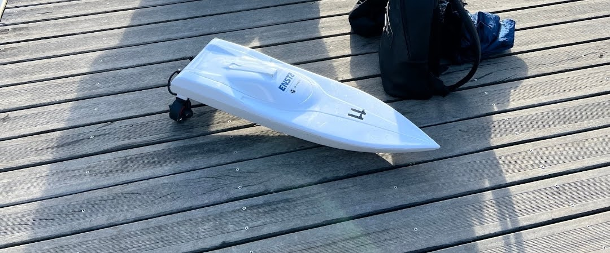

BEST 2026 · ENSTA Bretagne · Guerlédan Lake
Team NavySeals
Autonomous navigation of a DD-Boat: compass calibration, GPS guidance, a digital twin and real runs on Guerlédan Lake.

Autonomous navigation of a DD-Boat: compass calibration, GPS guidance, a digital twin and real runs on Guerlédan Lake.
